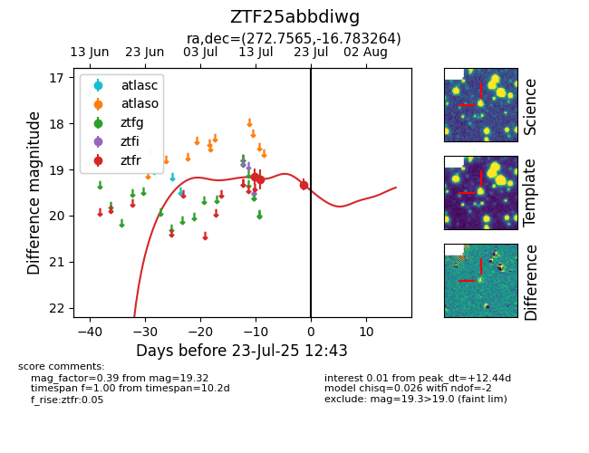

Target ZTF25abbdiwg at 2025-07-23 12:43, see:
FINK: fink-portal.org/ZTF25abbdiwg
Lasair: lasair-ztf.lsst.ac.uk/objects/ZTF25abbdiwg
ALeRCE: alerce.online/object/ZTF25abbdiwg
alt names
ZTF25abbdiwg (ztf,fink)
coordinates:
equatorial (ra, dec) = (272.7565,-16.78326)
galactic (l, b) = (13.4433,+1.02015)
photometry
last ztfr=19.32
3 ztfr detections
